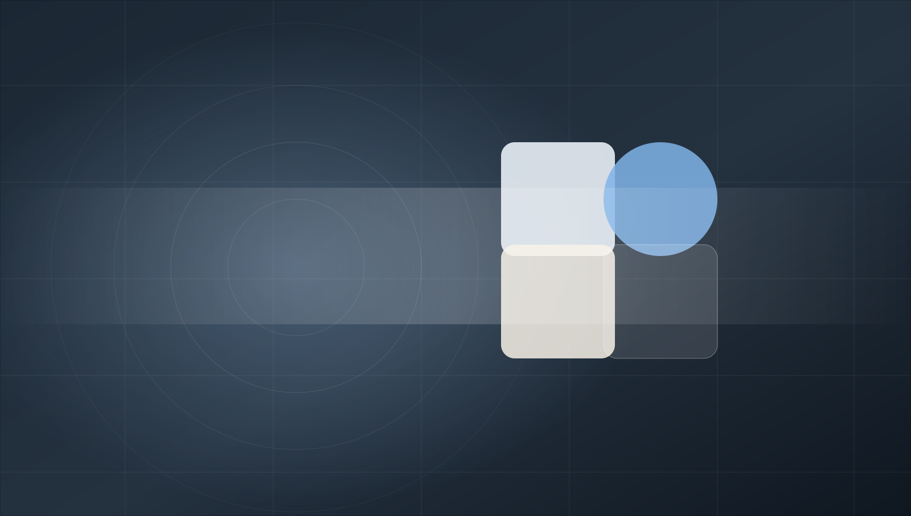

Elemento de muestra
Variante base · dos niveles de jerarquía
03 Glassmorphism
Bloque 01 Encabezado · nav de secciones + hero
Espécimen 03 · Glassmorphism
Los componentes estructurales se mantienen constantes: cambian los tokens de estilo. Este encabezado demuestra cómo un skin redefine superficies, contrastes y jerarquía formal.

Espécimen en vivo · Versión neutral
Bloque 02 Tokens · paleta, tipografía, forma y movimiento
Paleta real del skin; clic en cualquier muestra para copiar el hex. Comparar esta sección entre dos estilos es comparar su ADN.
Métricas 84/100
--text-display · clamp(2.4rem, 1.4rem + 4vw, 4.2rem)
Rendimiento de interfaz
--text-h2 · clamp(1.5rem, 1.2rem + 1.4vw, 2.1rem) / 700
El contenido del espécimen analiza la consistencia en espaciados, proporciones y legibilidad en pantallas de alta densidad.
--text-body-size · 0.95rem / 1.55 · 400
--text-strong: …
--font-mono · solo código y tokens
radio · sm md lg pill — los cuatro niveles, reescritos por el skin
shadows · 3 niveles: la receta que más separa a un estilo de otro
space · 4 8 12 16 24 32 48 64 96 — los mismos 9 valores en todos los estilos: el espaciado no es del estilo, es de la base
motion · pasa el mouse: 1 micro, 2 estándar, 3 reveals
Bloque 03 Botones · variantes, tamaños y estados
La etiqueta de cada botón nombra la variante de diseño, nunca una
acción ni un dato: el espécimen se puede copiar sin arrastrar vocabulario de negocio. Un radio, un acento
por contexto y press real en :active. Si el estilo funciona aquí, funciona en toda la app.
disabledbtn · leyendo tokens…
Bloque 04 Tarjetas y datos · chips interactivos, selector de estado e inputs
Cada componente se pinta con una familia de token —éxito, aviso, crítico, información, neutro—, nunca con un estado de negocio. Así el color se puede reusar en cualquier proyecto sin arrastrar vocabulario ajeno. Haz clic en los chips: actualizan la barra lateral y el estado visual.
pill · 11px/700 · radio adaptado al estilo · la palabra la pone el proyecto, el color lo pone el token
24/28 elementos
Elemento de muestra
Variante base · dos niveles de jerarquía
Segundo elemento
Misma estructura · otra familia de color
dbar + ck · barra lateral de familia · chips de alternancia rápida · el texto del chip es del proyecto, la clase es del diseño